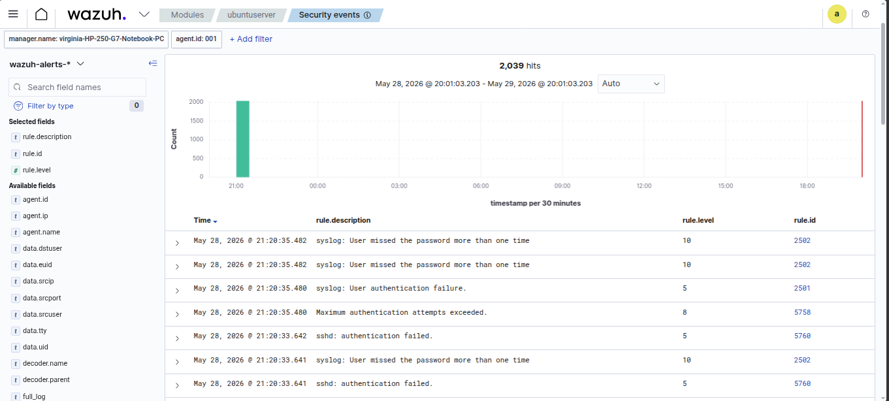

Detección y análisis de un ataque de fuerza bruta SSH contra un endpoint Linux monitorizado. 1.183 intentos de autenticación fallidos en menos de 3 minutos, generados desde Kali Linux con Hydra, correlacionados automáticamente con MITRE ATT&CK T1110.
// 01_resumen
El SIEM Wazuh detectó un ataque de fuerza bruta SSH originado desde 192.168.0.107 (Kali Linux) contra el endpoint ubuntuserver (192.168.0.103). El ataque duró aproximadamente 3 minutos, generando 1.183 intentos de autenticación fallidos sin ningún acceso exitoso.
El atacante apuntó exclusivamente al usuario root, utilizando la wordlist rockyou.txt con la herramienta Hydra a una tasa de ~66 intentos por minuto. Wazuh correlacionó automáticamente los eventos con la táctica Credential Access del framework MITRE ATT&CK, activando alertas de nivel 5, 8 y 10.
// veredicto
True Positive confirmado. Ataque de fuerza bruta SSH real contra endpoint monitorizado. Sin acceso exitoso. Endpoint aislado para análisis. Se recomienda implementar fail2ban, deshabilitar login de root por SSH y considerar autenticación por clave pública.
// 02_evidencia
// 03_timeline
Primera autenticación fallida detectada. Wazuh activa regla 5760 (nivel 5) — sshd: authentication failed.
Wazuh activa regla 5758 (nivel 8) — Maximum authentication attempts exceeded. El patrón de múltiples fallos desde la misma IP queda registrado.
Wazuh activa regla 2502 (nivel 10) — User missed the password more than one time. Correlación automática con MITRE T1110 Brute Force, táctica Credential Access.
Hydra mantiene 4 hilos activos contra el usuario root a ~66 intentos/minuto. Ningún intento resulta exitoso.
Último evento registrado. Ataque detenido manualmente. El endpoint no fue comprometido.
// 04_alertas
Tres reglas se activaron durante el ataque, escalando en severidad conforme aumentaban los intentos fallidos.

// 05_mitre
El adversario intentó obtener acceso al sistema probando múltiples contraseñas contra el usuario root mediante SSH. Esta técnica busca acceder a cuentas válidas mediante fuerza bruta, especialmente contra servicios de acceso remoto expuestos como SSH. El uso de Hydra con rockyou.txt es un patrón clásico de T1110.001 (Password Guessing).
// 06_acciones
Identificación del origen: IP atacante 192.168.0.107 identificada como Kali Linux del lab. En un entorno real esta IP sería externa o de un segmento no autorizado.
Correlación de alertas: Análisis de las tres reglas activadas (5760 → 5758 → 2502) confirmando escalada de severidad consistente con ataque de fuerza bruta sostenido.
Verificación de acceso exitoso: Confirmado 0 autenticaciones exitosas. El endpoint no fue comprometido durante el ataque.
Clasificación: True Positive confirmado. Ataque de fuerza bruta SSH real con patrón, origen, objetivo y herramienta identificados.
Escalamiento: En un entorno productivo este caso se escalaría a Tier 2 para bloqueo de IP, revisión de otros endpoints y análisis de movimiento lateral potencial.
// 07_recomendaciones
// 08_lecciones
Wazuh escala la severidad automáticamente. El sistema detectó el patrón de intentos múltiples y escaló de nivel 5 a nivel 10 sin configuración adicional, activando las reglas correctas en el orden correcto.
El usuario objetivo importa. Apuntar exclusivamente a root es una señal clara de ataque automatizado — un humano probaría múltiples usuarios. Este patrón de usuario único facilita la detección.
La tasa de ataque es evidencia. 66 intentos por minuto desde puertos efímeros distintos pero hacia el mismo destino y usuario confirma el uso de una herramienta automatizada como Hydra.
0 accesos exitosos no significa 0 riesgo. Un atacante con más tiempo y una wordlist más específica podría haber tenido éxito. La detección temprana y el bloqueo automático son críticos.